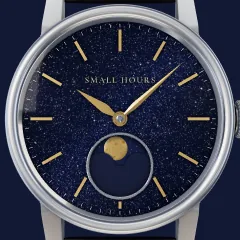
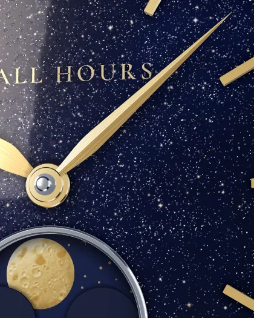
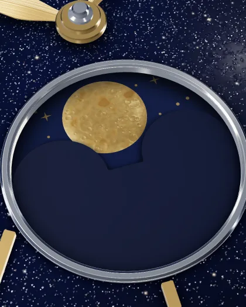
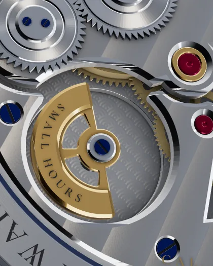
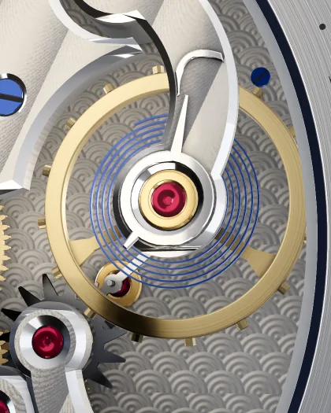
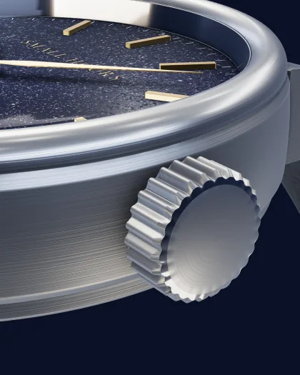
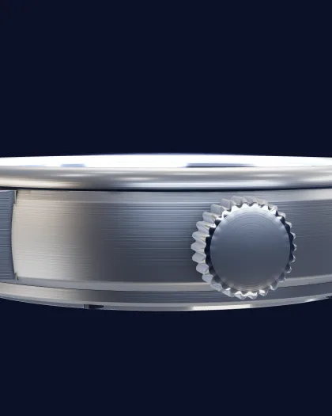
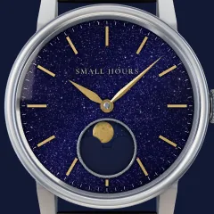
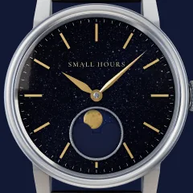

Midnight
Deep blue aventurine, gold moon. The one on this page.

This is not the night sky.
Moonphase automatic · a concept Kickstarter
It is a 39 mm dial of aventurine glass: a sky you can wear. The watch has stopped. Scroll to wind it.
Scroll to wind
00:40 · Wind it
Every turn of the crown tightens the mainspring. Turn the watch over and the balance wheel starts to breathe.
01:20 · Inside
The balance wheel swings 28,800 times an hour. Behind it, a gold micro-rotor winds the spring each time your wrist moves.
Six people wearing Small Hours in the middle of the night: a nurse on a night shift, a baker at four, a parent at the 2 a.m. feed, an astronomer, a taxi driver and a writer. Then the workbench where it is made.
03:30 · The bench
03:40 · The spring
Three nights on one winding.
03:50 · Every part
Thirty-one parts, none of them hidden.
04:00 · Engrave
Type it and watch it cut into the steel. Up to 24 letters.
04:40 · Tonight's moon
100%
Lit tonight
Worked out in your browser from today's date. The disc on the dial agrees.
05:50 · Morning
39 × 46 × 11.2 mm. About actual size on a phone. The lines under it are wrists of 15, 17 and 19 cm, seen from above.
Questions
Small Hours is a concept made by Lumen Lab to show how a watch micro-brand launch could feel. There is no company and nothing for sale. A real brand would put its people and its workshop here.
In this concept, an example automatic calibre with a micro-rotor, 28,800 beats an hour and a 72-hour reserve. A real brand names the maker and the calibre here.
39 mm across, 46 mm lug to lug and 11.2 mm thin, on a strap for 15 to 19 cm wrists. The last chapter of the night shows it at about actual size.
A two-year warranty, serviced by the people who made it. (Example terms for a concept brand.)
Shipping and import duties shown before you pay, so nothing arrives with a bill attached. (Example terms.)
If delivery slips past the date we gave, you can cancel for a full refund. (Example terms.)
Up close






Three dials

Deep blue aventurine, gold moon. The one on this page.

Violet aventurine for the hour after sunset.

Black aventurine. The stars only show when the light hits.
The almanac
Kickstarter launch
30 DAYS
Until the next full moon
This watch doesn't exist.
Small Hours is a concept by Lumen Lab. If a watch that isn't real kept you scrolling until morning, imagine what a launch page could do for one that is.
Lumen Lab →A concept site. Small Hours is not a real brand: no products, no orders, and no emails are collected. The photographs are generated images. Moon phases are computed in your browser for today.